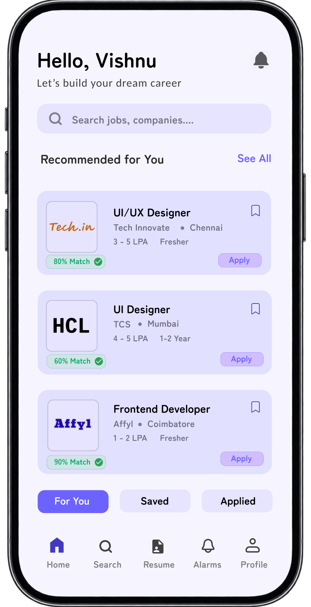

01
Home Page
The home screen is designed to help users discover relevant job opportunities quickly. It highlights personalized recommendations based on selected skills and preferred roles, making job discovery more focused and easier to navigate.